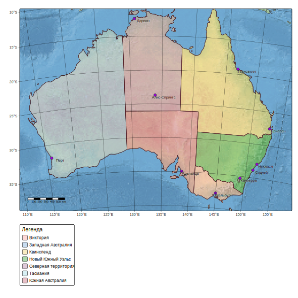
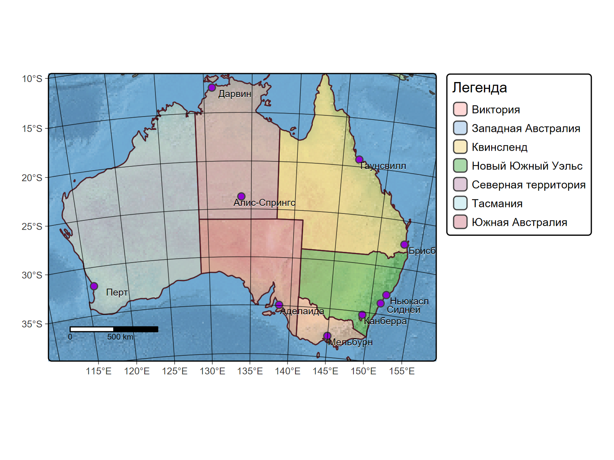
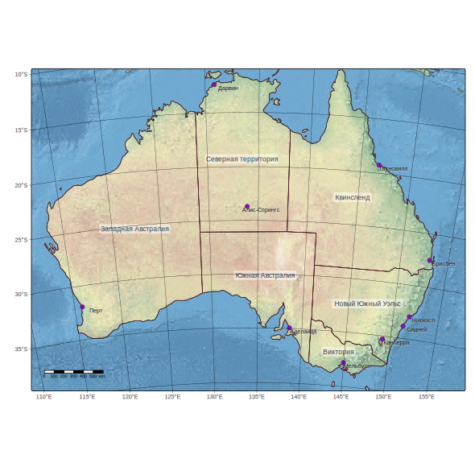
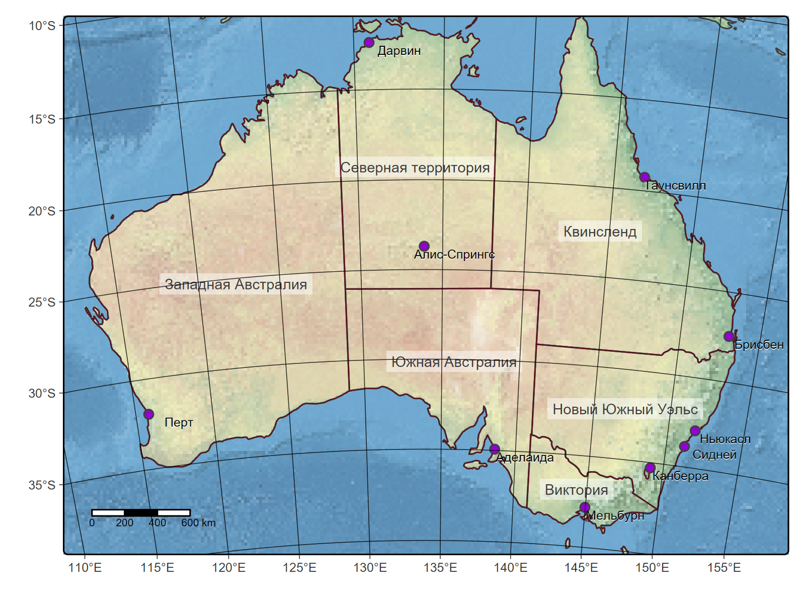

# ссылки на скачивание shape-файлов:
# ocean: https://www.naturalearthdata.com/http//www.naturalearthdata.com/download/10m/physical/ne_10m_ocean.zip
# state: https://www.naturalearthdata.com/http//www.naturalearthdata.com/download/10m/cultural/ne_10m_admin_1_states_provinces.zip
# place: https://www.naturalearthdata.com/http//www.naturalearthdata.com/download/10m/cultural/ne_10m_populated_places.zip
# relief: https://www.naturalearthdata.com/http//www.naturalearthdata.com/download/10m/raster/NE1_HR_LC_SR_W.zip
library(sf)Linking to GEOS 3.13.0, GDAL 3.10.1, PROJ 9.5.1; sf_use_s2() is TRUEterra 1.8.29library(tmap)
library(RColorBrewer)
# поменяла способ чтения растра на чтение через terra, поменяла масштаб данных с 50m на 10m
root <- "D:/users/platt/shapefile/auxiliary/naturalearth/5.1.2"
ocean<-st_read(file.path(root,"50m_physical","ne_50m_ocean.shp.zip"))Reading layer `ne_50m_ocean' from data source
`C:\Users\platt\shapefile\auxiliary\naturalearth\5.1.2\50m_physical\ne_50m_ocean.shp.zip'
using driver `ESRI Shapefile'
Simple feature collection with 1 feature and 3 fields
Geometry type: MULTIPOLYGON
Dimension: XY
Bounding box: xmin: -180 ymin: -85.19219 xmax: 180 ymax: 90
Geodetic CRS: WGS 84Reading layer `ne_50m_admin_1_states_provinces' from data source
`C:\Users\platt\shapefile\auxiliary\naturalearth\5.1.2\50m_cultural\ne_50m_admin_1_states_provinces.shp.zip'
using driver `ESRI Shapefile'
Simple feature collection with 294 features and 121 fields
Geometry type: MULTIPOLYGON
Dimension: XY
Bounding box: xmin: -180 ymin: -46.96289 xmax: 180 ymax: 83.11611
Geodetic CRS: WGS 84Reading layer `ne_50m_populated_places' from data source
`C:\Users\platt\shapefile\auxiliary\naturalearth\5.1.2\50m_cultural\ne_50m_populated_places.shp.zip'
using driver `ESRI Shapefile'
Simple feature collection with 1251 features and 137 fields
Geometry type: POINT
Dimension: XY
Bounding box: xmin: -175.2206 ymin: -90 xmax: 179.2166 ymax: 78.22097
Geodetic CRS: WGS 84relief<-terra::rast(file.path(root,"../../naturalearth.raster","NE2_50M_SR_W.tif")) # |> as("SpatRaster")
class(relief)[1] "SpatRaster"
attr(,"package")
[1] "terra"[1] "SpatRaster"
attr(,"package")
[1] "terra"# Преобразуем name_ru в character СРАЗУ после чтения данных
state$name_ru <- as.character(state$name_ru)
# чтобы быть точно уверенными в системе координат, проверяем и устанавливаем её (по умолчанию это WGS 84 = EPSG:4236, т.е. и не проекция даже)
st_crs(ocean)Coordinate Reference System:
User input: WGS 84
wkt:
GEOGCRS["WGS 84",
DATUM["World Geodetic System 1984",
ELLIPSOID["WGS 84",6378137,298.257223563,
LENGTHUNIT["metre",1]]],
PRIMEM["Greenwich",0,
ANGLEUNIT["degree",0.0174532925199433]],
CS[ellipsoidal,2],
AXIS["latitude",north,
ORDER[1],
ANGLEUNIT["degree",0.0174532925199433]],
AXIS["longitude",east,
ORDER[2],
ANGLEUNIT["degree",0.0174532925199433]],
ID["EPSG",4326]]if (is.na(st_crs(ocean))) {
st_crs(ocean) <- "EPSG:4326"
}
# и вырезываем Австралию
australia<-sf::st_crop(ocean, xmin = 105, ymin = -48, xmax = 165, ymax = -8)Warning: attribute variables are assumed to be spatially constant throughout all geometries# затем трансформируем проекцию наших данных
australia_albers <- st_transform(australia, crs = "EPSG:3112")
# поверяем, изменилась ли она
st_crs(australia_albers)Coordinate Reference System:
User input: EPSG:3112
wkt:
PROJCRS["GDA94 / Geoscience Australia Lambert",
BASEGEOGCRS["GDA94",
DATUM["Geocentric Datum of Australia 1994",
ELLIPSOID["GRS 1980",6378137,298.257222101,
LENGTHUNIT["metre",1]]],
PRIMEM["Greenwich",0,
ANGLEUNIT["degree",0.0174532925199433]],
ID["EPSG",4283]],
CONVERSION["Geoscience Australia Standard National Scale Lambert Projection",
METHOD["Lambert Conic Conformal (2SP)",
ID["EPSG",9802]],
PARAMETER["Latitude of false origin",0,
ANGLEUNIT["degree",0.0174532925199433],
ID["EPSG",8821]],
PARAMETER["Longitude of false origin",134,
ANGLEUNIT["degree",0.0174532925199433],
ID["EPSG",8822]],
PARAMETER["Latitude of 1st standard parallel",-18,
ANGLEUNIT["degree",0.0174532925199433],
ID["EPSG",8823]],
PARAMETER["Latitude of 2nd standard parallel",-36,
ANGLEUNIT["degree",0.0174532925199433],
ID["EPSG",8824]],
PARAMETER["Easting at false origin",0,
LENGTHUNIT["metre",1],
ID["EPSG",8826]],
PARAMETER["Northing at false origin",0,
LENGTHUNIT["metre",1],
ID["EPSG",8827]]],
CS[Cartesian,2],
AXIS["(E)",east,
ORDER[1],
LENGTHUNIT["metre",1]],
AXIS["(N)",north,
ORDER[2],
LENGTHUNIT["metre",1]],
USAGE[
SCOPE["Topographic mapping, environmental studies."],
AREA["Australia - Australian Capital Territory; New South Wales; Northern Territory; Queensland; South Australia; Tasmania; Western Australia; Victoria."],
BBOX[-43.7,112.85,-9.86,153.69]],
ID["EPSG",3112]]# растр тоже нужно перепроецировать в Альберс, иначе он поломает нам ситему координат, когда будем вырезать из него Австралию
# задаём Альберс и перепроецируем в него (это дико долго, но делается)
albers_crs <- "EPSG:3112"
relief_albers <- terra::project(relief, albers_crs)|---------|---------|---------|---------|========================================= [1] "PROJCRS[\"GDA94 / Geoscience Australia Lambert\",\n BASEGEOGCRS[\"GDA94\",\n DATUM[\"Geocentric Datum of Australia 1994\",\n ELLIPSOID[\"GRS 1980\",6378137,298.257222101,\n LENGTHUNIT[\"metre\",1]]],\n PRIMEM[\"Greenwich\",0,\n ANGLEUNIT[\"degree\",0.0174532925199433]],\n ID[\"EPSG\",4283]],\n CONVERSION[\"Geoscience Australia Standard National Scale Lambert Projection\",\n METHOD[\"Lambert Conic Conformal (2SP)\",\n ID[\"EPSG\",9802]],\n PARAMETER[\"Latitude of false origin\",0,\n ANGLEUNIT[\"degree\",0.0174532925199433],\n ID[\"EPSG\",8821]],\n PARAMETER[\"Longitude of false origin\",134,\n ANGLEUNIT[\"degree\",0.0174532925199433],\n ID[\"EPSG\",8822]],\n PARAMETER[\"Latitude of 1st standard parallel\",-18,\n ANGLEUNIT[\"degree\",0.0174532925199433],\n ID[\"EPSG\",8823]],\n PARAMETER[\"Latitude of 2nd standard parallel\",-36,\n ANGLEUNIT[\"degree\",0.0174532925199433],\n ID[\"EPSG\",8824]],\n PARAMETER[\"Easting at false origin\",0,\n LENGTHUNIT[\"metre\",1],\n ID[\"EPSG\",8826]],\n PARAMETER[\"Northing at false origin\",0,\n LENGTHUNIT[\"metre\",1],\n ID[\"EPSG\",8827]]],\n CS[Cartesian,2],\n AXIS[\"(E)\",east,\n ORDER[1],\n LENGTHUNIT[\"metre\",1]],\n AXIS[\"(N)\",north,\n ORDER[2],\n LENGTHUNIT[\"metre\",1]],\n USAGE[\n SCOPE[\"Topographic mapping, environmental studies.\"],\n AREA[\"Australia - Australian Capital Territory; New South Wales; Northern Territory; Queensland; South Australia; Tasmania; Western Australia; Victoria.\"],\n BBOX[-43.7,112.85,-9.86,153.69]],\n ID[\"EPSG\",3112]]"# extent Австралии в системе координат Albers
australia_extent <- ext(australia_albers)
australia_extentSpatExtent : -3171991.55352568, 3177321.91053553, -4963113.2684335, -1101692.92872546 (xmin, xmax, ymin, ymax)# и обрезаем до Австралии
relief_albers_cropped <- terra::crop(relief_albers, australia_extent)
# проверяем, что эта сволочь существует
relief_albers_cropped class : SpatRaster
dimensions : 206, 339, 3 (nrow, ncol, nlyr)
resolution : 18721.63, 18721.63 (x, y)
extent : -3174065, 3172568, -4960221, -1103564 (xmin, xmax, ymin, ymax)
coord. ref. : GDA94 / Geoscience Australia Lambert (EPSG:3112)
source(s) : memory
colors RGB : 1, 2, 3
names : NE2_50M_SR_W_1, NE2_50M_SR_W_2, NE2_50M_SR_W_3
min values : 72, 111, 103
max values : 247, 241, 220 # дальше мы будем красить регионы Австралии разными цветами
# для этого необходимо отсортировать их по какому-то стабцу таблицы атрибутов
# удобнее всего по name_ru
# к сожалению, там может ничего не значиться - эту ситуацию надо предусмотреть
# либо удаляем строки с NA (это может привести к потере существенных данных, если строк NA в таблице много)
# либо заменяем NA на значение по умолчанию в столбце name_ru
# я попробовала покрасить регионы без этого - и выяснила, что есть она строка с NA в name_ru
state$name_ru <- trimws(state$name_ru) # Удаляет пробелы в начале и конце строк
state <- state[!is.na(state$name_ru) & state$name_ru != "", ]
state <- state[!is.na(state$name_ru), ] # но делать это надо ДО того, как фильтровать регионы
# выбираем нужные нам кусочки Австралии
state.au <- state[state$admin == "Australia", ]
state.au <- state.au[!is.na(state.au$name_ru), ] # фильтруем NA
state.st <- state[state$admin == "Australia" & state$type == "State", ]
state.st <- state.st[!is.na(state.st$name_ru), ]
state.tr <- state[state$admin == "Australia" & state$type == "Territory", ]
state.tr <- state.tr[!is.na(state.tr$name_ru), ]
northern <- state.tr[state.tr$name == "Northern Territory", , drop = FALSE]
if (nrow(northern) == 0) {
warning("Northern Territory not found after filtering!")
}
# Затем объединяем, зная, что в каждом кусочке NA уже отфильтрованы
states.au <- rbind(state.st, northern)
# Последняя проверка для уверенности:
states.au <- states.au[!is.na(states.au$name_ru), ]
# Еще раз убедимся, что NA больше нет
table(states.au$name_ru, useNA = "ifany")
Виктория Западная Австралия Квинсленд Новый Южный Уэльс Северная территория
1 1 1 1 1
Тасмания Южная Австралия
1 1 # не помешает также проверить northern на NA, т.к. его фильтруем отдельно
state.tr<-state.au[state.au$type=="Territory",]
northern<-state.tr[1,]
table(northern$name_ru, useNA = "ifany")
Северная территория
1 # тут всё чисто
# наконец добираем данные по городам:
place.au<-place[place$ADM0NAME=="Australia",]
place.au4<-place.au[place.au$SCALERANK<4,]
# сужаем границы, чтобы сделать красиво
xmin <- st_bbox(australia_albers)["xmin"]
xmax <- st_bbox(australia_albers)["xmax"]
ymin <- st_bbox(australia_albers)["ymin"]
ymax <- st_bbox(australia_albers)["ymax"]
xmin_new <- xmin + (xmax - xmin) * 0.15
xmax_new <- xmax - (xmax - xmin) * 0.15
ymin_new <- ymin + (ymax - ymin) * 0.1
ymax_new <- ymax - (ymax - ymin) * 0.05
australia_extent <- ext(c(xmin_new, xmax_new, ymin_new, ymax_new))
relief_albers_cropped <- terra::crop(relief_albers, australia_extent)
# приступаем к отображению
tmap_mode("plot")ℹ tmap mode set to "plot".(tm1<-tm_shape(relief_albers_cropped) +
tm_rgb() +
tm_shape(australia_albers) +
tm_polygons(fill=NULL) +
tm_shape(states.au) +
tm_polygons(
fill="name_ru", fill_alpha=0.4,
fill.legend =
tm_legend(title="Легенда", palette = "met.nattier", fill_alpha=0.4)) +
tm_borders(col="#600c1a", lwd=0.5) +
tm_shape(place.au4) +
tm_symbols(place.au4, size=0.5, lwd=1, fill="darkviolet") +
tm_text(text="NAME_RU", size=0.6, xmod=2, ymod=-0.55, col="white") +
tm_text(text="NAME_RU", size=0.6, xmod=2, ymod=-0.5) +
tm_scalebar(position=c("left", "bottom")) +
tm_graticules(size=0.5, alpha=0.8, col="black", lwd=0.5) +
tm_layout(xlim = c(xmin_new, xmax_new), ylim = c(ymin_new, ymax_new)))
# если предпросмотр нас устроил, пишем в итоговый файл
fileout <- "australia_tmap17.png"
if (!dir.exists(dirname(fileout)))
dir.create(dirname(fileout),recursive=TRUE)
png(fileout, res=300, width=1600, height=1200,
type="cairo", pointsize=10, family="arial")
print(tm1)
dev.off()devSVG
2 
(tm2<-tm_shape(relief_albers_cropped) +
tm_rgb() +
tm_shape(australia_albers) +
tm_polygons(fill=NULL) +
tm_shape(states.au) +
tm_polygons(fill=NULL) +
tm_text(text="name_ru", size=0.7, col="#3b3b3b", bgcol="white", bgcol_alpha=0.5) +
tm_borders(col="#600c1a", lwd=0.5) +
tm_shape(place.au4) +
tm_symbols(place.au4, size=0.5, lwd=1, fill="darkviolet") +
tm_text(text="NAME_RU", size=0.6, xmod=2, ymod=-0.55, col="white") +
tm_text(text="NAME_RU", size=0.6, xmod=2, ymod=-0.5) +
tm_scalebar(position=c("left", "bottom")) +
tm_graticules(size=0.5, alpha=0.8, col="black", lwd=0.5) +
tm_layout(xlim = c(xmin_new, xmax_new), ylim = c(ymin_new, ymax_new)))
# если предпросмотр нас устроил, пишем в итоговый файл
fileout <- "australia_tmap18.png"
if (!dir.exists(dirname(fileout)))
dir.create(dirname(fileout),recursive=TRUE)
png(fileout, res=300, width=1600, height=1200,
type="cairo", pointsize=10, family="arial")
print(tm2)
dev.off()devSVG
2 